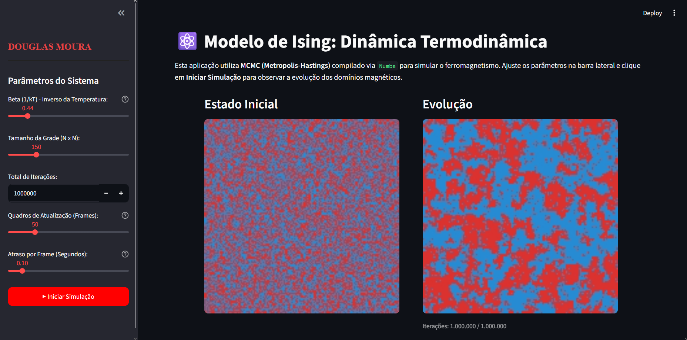

01. Fundamentação Teórica
O Modelo de Ising Bidimensional é um dos paradigmas mais vitais da Mecânica Estatística moderna. Ele foi formulado para descrever a natureza de materiais ferromagnéticos em função da temperatura. Em sua essência, o sistema consiste em uma rede quadrada bidimensional de dimensão $n \times n$.
Cada sítio da malha abriga uma variável aleatória chamada spin ($\sigma_i \in \{-1, +1\}$), que pode estar orientada "para cima" ou "para baixo". A energia total de uma configuração do sistema é ditada pela sua função Hamiltoniana:
Onde $J$ dita a constante de acoplamento (se positiva, os spins vizinhos tendem a se alinhar, caracterizando ferromagnetismo) e $h$ é o campo magnético externo. Ao cruzar o Ponto de Curie (a temperatura crítica do sistema), a simulação revela o desabrochar espontâneo da magnetização — a clássica transição de fase de segunda ordem.
02. Dinâmica de Metropolis e Performance JIT
Dado o crescimento exponencial dos microestados $2^N$, calcular a Função de Partição de forma analítica exata é inviável para redes amplas. Adotamos o rigor estocástico dos Métodos de Monte Carlo. O coração da atualização computacional baseia-se no Algoritmo de Metropolis-Hastings, que assegura o alcance da distribuição de equilíbrio de Gibbs por meio de cadeias de Markov regulares.
@njit da biblioteca Numba, atingimos
velocidades de linguagem compilada (C/C++), calculando milhões de interações de spin termodinâmico em frações
de
segundo."
Diferenciais Técnicos Alcançados:
- Aceleração JIT extrema: Uso cirúrgico do framework `numba` para desviar a lentidão do Global Interpreter Lock (GIL).
- Multilinguagem: Estudo arquitetado e testado usando Python para a interatividade e a linguagem R como pilar de validação analítica da amostragem base.
- UX Científico Moderno: Criação de front-end em
Streamlitpuramente via código, fornecendo a estudantes e curiosos um lab-deck em tempo real (painel lateral de interatividade).
03. Simulação Interativa (Live App)
Sinta a termodinâmica rodando na nuvem. Altere os valores de Temperatura e veja a rede de spins ferromagnéticos quebrar sua simetria visualmente (em baixas temperaturas formam-se domínios magnéticos densos; em altas temperaturas prevalece o caos e a desordem térmica).

Explore o Modelo
Acesse a aplicação em tempo real ou consulte a fundamentação matemática no relatório técnico oficial.